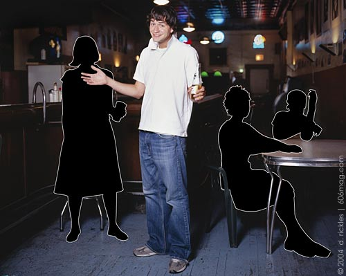

 |
When I walked into the bar, I could feel the electricity in the air . It wasn't so much like the electricity at a playoff baseball game, but more like the little blue flash you see when you bite into a Wintergreen Life Saver in the dark. The single guys, consisting mostly of strangers, were grouped together around the bar or near the televisions watching the game. Everyone was dressed relatively well: shirts were tucked in and everyone wore their good pair of shoes. The girls were all together in packs, making it look obvious that they came with a few girlfriends, all checking out the field of guys that they had to work with that night. Sounds like a typical night out at a bar, right? I guess you could call it that, but this was an arranged evening, courtesy of HurryDate. Speed dating, fast dating, three-minute dating – whatever you want to call it – is an arranged dating service for people who are too busy to find time to meet people of the opposite sex. All you have to do is pay $35 (plus $1.90 for processing) when you pre-register, and show up at the arranged location for the evening. Promptly at the declared starting hour, everyone is herded into a private room at the bar and the event is explained. Participants are given a number and a scorecard, and asked to simply circle a yes or a no next to the number of each person evaluated on the “date.” There's also a little space on the card where you can make reminders to yourself. At the end of the night, a few of my reminders were went to Iowa , microbiologist, awesome personality w/ pink top , etc. One gender sits in the same spot all night, while the other gender rotates from table to table at the five-minute whistle. At my event there were more men than women ; the women sat and the men rotated. Because there was an uneven amount of each sex, men got a break every once in a while, which was nice to use for a bathroom break, to grab another beer and regroup. The “dates” themselves were painless and fun. Because there was only five minutes to establish a connection, questions were fired off at a fast pace. “Have you ever done this before?” was the most common question, followed by “Where do you live?” “What do you do?” and “What do you do in your spare time?” All questions were relatively easy to answer in more than one word. My favorite icebreaker was: “How have all your other dates gone so far?” in a sarcastic tone, as if to say “I am here to beat out everyone else you've talked to.” After having a “date” with everyone of the opposite sex, the evening is over. I stuck around for one last beer, and was surprised that everyone left so quickly. Within half an hour, I was one of only three people from the session remaining in the bar. I had expected some of the participants to stick around and add a few more minutes on to the five they had spent on one another. The next day, participants login to the HurryDate website and electronically mark the yes and no respnses. Then you wait. After everybody who was at the event has entered their results, you log back in and find out if there were any matches or not. A match is made when a female marks yes and the guy she marked yes for also marks a yes for her. Pretty self-explanatory. If there are matches, the dater has the ability to e-mail the other half and, according the Web site, “let the e-flirting begin.” The problem with the Web-based scorecard was the fact that I could see who said yes to me, even though I said no to her. There is even a “Make a Mutual Match” button, where (I guess) a no can be changed to a yes. I didn't really like this functionality; if I had said yes to a girl and she said no, I wouldn't want her to know out of humility sake. When all's said and done, the HurryDate service does deliver an easy way to meet members of the opposite sex. However, I was not completely satisfied with the experience. First of all, there were only 12 women there compared to 16-18 men. That meant a lot of breaks and a lot of competition. And because I'm a math-brained person, I figured that I was paying about $3 to talk to each of these girls (12 girls into the $36), some of whom I didn't even enjoy talking to. I didn't like the five-minute limit. Five minutes is a short, short amount of time. Girls are firing off questions, and the answers need to be clever so a good impression is made; however, a clever answer is usually long-winded. It happens literally so fast that there were, on average, four questions asked by each party, and then it's over. I will say, though, that if the conversation is going poorly, the short amount of time is a good thing. I sat with one young lady who I thought was a tad on the aggressive side. I had known her for an entire 1.5 minutes, when she began to flirt heavily: asking if I was a good kisser, which “positions” I enjoyed, and she even grabbed my hand at one point. I, on the other hand, was asking questions like, “What books do you like?” and “Do you think Luke Skywalker is awesome?” Clearly she and I were not on the same page. This is when the five-minute limit was a good thing. My last complaint is hard to lodge without sounding like an asshole, but here goes. I wasn't overly impressed by the clientele. I can pretty much guarantee that neither sex was. It's not like I expected to go to this event and meet 30 of the coolest girls I've ever met, but I was hoping for maybe one or two marginally entertaining ones. Eleven out of the 12 females resided in the suburbs, and that's not really all that convenient. Some of the people I talked to had zero conversational skills; some wouldn't even make eye contact. On the other hand, I think events like this are good practice for people who are terrified of talking to members of the opposite sex. The conversation is ultimately forced. My advice to anyone considering attending one of these events is to go and experience it, but don't plan on meeting a future girlfriend or boyfriend there. In the end, I think I'll take my chances on my own, even though I am a professional when it comes to striking out. |